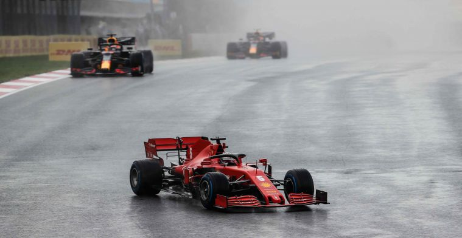
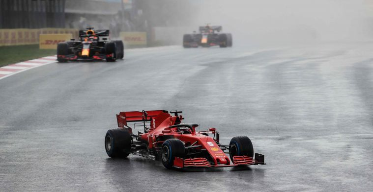

Binotto: 'Strijd om P3 bij constructeurs is nog niet voorbij'
23-11-2020 15:46Door Bonne Veenstra
Door Bonne Veenstra
Mattia Binotto ziet de recente verbetering van Ferrari als ‘bemoedigend’ om in 2021 de juiste stap voorwaarts te zetten. In de laatste races werden goede punten gepakt en in Turkije wist Sebastian Vettel voor het eerst in 2020 op het podium te eindigen..
“Het is natuurlijk heel belangrijk dat Ferrari het momenteel goed doet”, zegt Binotto tegen Motorsport.com. Vooral de snelheid in de races zelf is flink vooruitgegaan volgens de Italiaanse teambaas. “Ik denk dat de auto consistenter en sneller is. Het is geweldig om deze resultaten te hebben, want het zorgt voor optimisme voor het komende jaar.”
De stap voorwaarts die het team in 2020 heeft gezet, wil het team in de laatste drie Grands Prix doorzetten. “Qua positie in het constructeurskampioenschap is het seizoen nog niet voorbij en dat is bemoedigend”, zegt Binotto.
Binotto is zelf niet naar Turkije gereisd om de Turkse Grand Prix bij te wonen. In plaats daarvan bleef hij achter in Maranello om het team in de fabriek te steunen. “Mensen in de fabriek doen hun best om de zwakke punten van de auto te begrijpen en proberen ze aan te pakken. En ter voorbereiding op volgend jaar moedigen deze resultaten ons aan.”
Beluister hier de nieuwste UNDERCUT, de Formule1-podcast van GPblog!